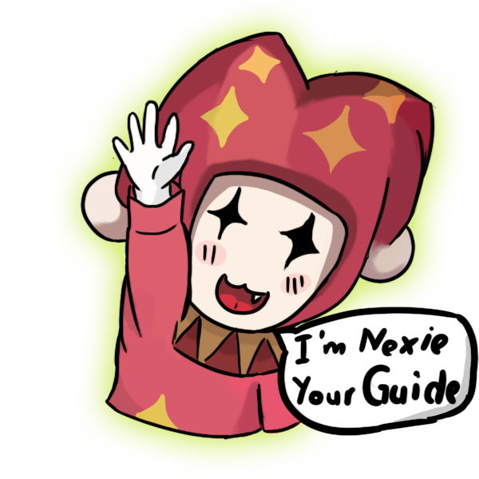
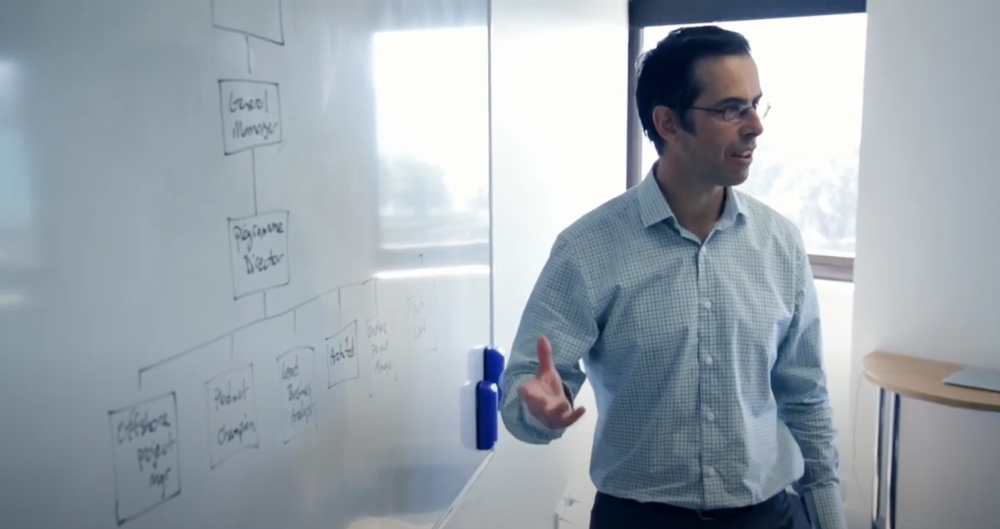

Welcome to the
Crafty Circus
Find your seat, me, the best clowny servant, will show you what could be done here.
-
Khoa -
Khang -
Phong -
Nhat -
Team Profile -
Ideal Jobs
Crafty Circus
It took university for us to do comedy
Crafty Circus is an organization founded during the Covid-19 pandemic, carrying the shared hope of 4 young men, but nothing about the covid.
(Clear throat..)
We bring joy and memorable moment to readers and that's why we are crafty circus.
⇦For more information check on our Creators' Profile.
I am not an organized type of person, I prefer messiness due to the comfort it brings. However, I follow a habbit so that I would not miss any work. It explains why I am usually chosen as a leader.
The second result suggests that I learn best through action. It is true as I am extremely impatient toward verbal and writen introduction and most of the time, I just want to do the work immediately.
I am not a idea generator, I usually have innovative ideas based on existed concepts in most cases. Therefore, I have my best performance when there is given concept to explore. As the chart suggests, my curiousity is genuinely high, this means I excel at explore an idea rather than creating new one.
To be honest, I believe these results test is some part reflect my true personality but not because of that I change myself. In fact, I love myself being now cause all my friend love me and I love that. Also I find it no hard to make new friend so I keep my lifestyle like this.
It does not influence my behaviour in my team at least, I have to do and need for my teammate.
My strengths are creativity, confidence and the ability to self-study so the teammates that I choose each of them are good at skills I don't have like Java(script), C#(++),... and especially being able to identify right and wrong because I usually do it without knowing whether it is allowed or not, I just do it with all the creativity I can think of.
From the 16 personalities results it showed me that I am more of an emotion-driven person, most of the time my actions will reflect back on how I feel about it more than how I think about it, since my intuition is 62% showing that I also sometimes understand things without the present of the conscious reasoning behind it.
The test results shows that in order for me to learn I have to physically take part in doing them to progress, I will have a hard time if it is from hearing through ears or through reading, expressing myself is a challenge for me since I will be using my hand gestures more when I express my ideas and I do not have a specific sitting pose. I do not like to sit or stand still when I am bored and breaking down things before rebuilding them up intrigues me. I really like physical form encouragement such as high-fiving or pat on the back. I have to interact with the problem in order to learn about it. When in a team I will be listening to the team while walking around and taking notes to remind myself about the details that are being put out by my members.
Overall the result shows that my creativity is not that high so as most of the specific traits inside the creativity graph. The only trait that I slightly excel at is Perspective, being able to persuade others, change their perspective of the situation by presenting my own thoughts and thinking process.
When I tested an online application on a browser about my personality and my learning style, I have recognized a lot of things about myself which I do not know about until they analyze me. Firstly, it is the 16Personalities testing my traits and the result definitely surprises me. The result in general is telling me that I am very energetic in everything and working with feelings, following my heart more than following my head. I am quite worried about this part of mine. I know that I am judging everything by my feelings but sometimes just following my heart only hurts myself and my life.
Fortunately, I have not done anything which makes me disappointed yet. Moreover, this test will explain reasonably why I am a tactile/kinesthetic. This style of learning is about combining movements and studyings altogether to imagine how the study will flow in my brain.
My last test from Big Five, the in the OCEAN, I am most of the A which means Agreeableness. It means a person with high A will trust their people, always care about others explaining how sympathetic I am which means how I am working with feelings more than logic.
I have always wanted to work in the game industry where people build wonderful and fancy worlds. Therefore, my dream job and also ideal job is a game developer and my inclined position is game designer.
The aspect of my work is vastly different to other members' jobs as I would in the creative field. Programmers like Phong, Khang and Nhat would spend the majority of their time coding, meanwhile, a designer's day will try to connect people through sharing the same vision.
To Phong and Nhat whose ideal jobs are programers, the similarity between mine and theirs is the comprehension of programming. Moreover, other abilities we also share is problem solving, analysis, and the passion for work with people.
There may be no apparent overlap between game designer and full-stack. We share different programming languages and tools.
Game designers require a handful of understanding of art and programming, two unrelated abilities. This means game designer is a higher-rank job among IT developers but also a demanding type of work.
Our team is a collection of the four most popular professions in the information technology world.
We have Kultras-game designer, Phong-software engineer, Kent Full-stack/Back-end web, and Nhat programmer. The careers seem unrelated, but they are the pieces of a perfect IT team. In general, we all have the basic skills and knowledge of each other's professions and can always grasp and understand what other members are doing. It seems we have unrelated disciplines, but actually, we call that diversity of professions.
Our team can execute and undertake almost any project in any field, but we feel most confident about games. Let say we have Kultras, Phong, and Nhat, which are all game-related disciplines, as well as designing a game-related software like app game.
And me, I specialize in the web. I can create communities to promote, synthesize, and develop games. For example, we can mention League of Legends, besides the game program, there is a website of its own which contain stories, information of champion, players, fan page or forum and a download page or news. It is where our works connect. On the other hand, the main difference is our programming languages, HTML is vastly distinctive to other programming used by my teammates.
The reason why I chose being a program engineer is because as a person, the amount of arts and crafts overall creativity do not show a lot for me to apply into jobs that lean towards the creative mind rather than technical details. I am not saying that a program engineer does not require creativity but personally after being in multiple coding class, I can get a sense of the amount of skills that needed to be put out and within that pool I can comfortably say that my creative mindset is enough for me to be able to work in a programming environment/work.
As I look throughout my teammates’ ideal job, in my opinion it is safe to say that my ideal job’s aspects is very similar to Nhat’s ideal job which is being a game programmer, we will most likely be the ones that will spend most of our times looking at the computer screen working on multiple of coding languages even though as for my current plan I will be executing vehicle-related programs while Nhat will be programming for his future games. However, I have listened to his description of being a game programmer and I am somewhat hooked into the idea of combining one of my personal interests into my job, therefore my ideal job might change in the future from a program engineer for vehicles into a game developer.
Khoa’s ideal job requires a good amount of everything in each of the other members’ jobs, while Nhat is aiming to be a game programmer. Khoa is heading straight towards being a game designer. An area that provides reachable yet creative and extraordinary ideas along with a passion for video games, a huge amount of creativity not only that but it is also required him to have an excellent programming skills as well, so basically he is a package of everything comparing to my ideal job, he would send plans and electronic blueprints for me and assist me on making the design into a real product. He does share some of the skills when it comes to teamwork such as the ability of working in a team and the ability to present the product to larger business groups.
Khang’s ideal job is rather much different compared to my ideal job, he wants to work as a full-stack developer, and he intends to lean towards specializing in website designing. That means he will be interacting with more foreign coding languages compared to me. His job would require more creativity as he needs to create an attractive website to gather viewer’s views. His job leans towards more in the collaborating field while requiring him to have strong communication skills, problem solving and an excellent analyzing and visualizing skills. Being the member that shares the least skill traits with me and Nhat when it comes to our ideal job, Khang can be a very strong member in our group as he will complete our missing piece being the one experience in a different territory.
As many boys who love playing video games, I would like to be able to make a game on my own or with my team. My dream job is that I want to be a game developer, more specifically, a programmer who does the coding which is one of the parts of the process of making the games including music, graphics, etc. Programmer is the one who combines all things in order to complete the applications, the games.
Compared with my team Ideal Jobs which is Phong who is going to be an Software Engineering, Kent wants to be a Full Stack and Khoa has a dream to be a Game Designer. I recognize that we are sort of a perfect team where everyone’s skills and jobs can support each other to make the dream come true.
I and Phong are both programmers, therefore, we could have knowledge in some basic code that supports each other by sharing code which helps debugging without conflicting in codes.
Besides, our team has Khoa whose dream job is game designer which helps the team to create graphics, characters. This position could be harder than coding because of the general salary in the IT industry. Lastly, Kent who wants to be a Fullstack, makes a website for our game to promote and get data from players.
☺ Nothing to see here

Industry Data
The majority of Crafty Circus 's members have already experienced other programming languages. Additionally, we have 3 anticipated ideal jobs that are about game development. Therefore, the best role for the team is Game Developer. Game Developer does not appear in the list, however, we can presume a game is a software as they are much or less similar in terms of making. According to the Burning Glass Data, our title scores at the 19th position in the list of in-demand job titles to employers.
Game creation requires a handful of abilities, especially, we will have to work with people from different areas. For example, programmers and artists usually have different ways of approaching the problem, this brings us the first consideration which is communication. Coming next are skills that every programmer needs to master, problem solving. Furthermore, Game development is a type of creative work meaning skill that we need to consider is creativity. We will be working on C# especially parts related to the Unity library. Besides, graphic design will be a consideration as people are extremely interested in appearance.
Rank
As reported in Burning Glass Data, communication and problem solving are the two holding top positions in employers' interests. While creativity is a bit lower at 9th, therefore, overall, our general abilities could be set at the top 4.
Two IT- specific abilities in our group rank at the 10th and 12th respectively, this may not score high in terms of demand.
Three highest in demand IT skills that we may not require are SQL, JavaScript and Java. One reason behind this Unity engine no longer supports JavaScript while others skills are not about video games.
Three higher-ranked general skills that we may not require are writing, English and self-starter. We put lots in considerations and only show the most obvious unnecessary abilities. As programmers, we do not have to write scripts outside of code much and adding to that we omitted English out of our consideration because we all have it to be RMIT students.
Khoa
I have not changed my opinion of my ideal work as a game designer, I normally do not learn discipline because people need it, I learn because of myself. I always keep a dream of making a video game and it would make nonsense if I try to master a in-need skill like SQL. At the first glance, with in-demand skills, it could say that I have a higher possibility of getting a job, however, it is not a higher chance of promotion. I think following passion, mastering aspects of work is a better solution for at least myself.
Khang
For the above datasheet, I have made some comparisons with some of the most up-to-date data. I draw the conclusion that change is obvious and even greatly changed the most clearly to see is web development in 2018 is a rare and difficult job but in 2020 it became popular and that required cutting-edge skills from employees in the same job.
Phong
Having looked at the Burning Glass data, I have reached to the conclusion that I will settle with my original ideal job choice which is being a software engineer, looking at the charts for general skills and I.T-related skills there are some fields that is needed the most and some that are still currently undiscovered by the majority of companies, overall my job balances out the traits, I will get to work in the same environment as other I.T Professionals but also have a slight edge of originality with my uncommon abilities such as fluent in English, that alone can open me up with a vast amount of job offering.
Nhat
After reading Burning Glass Data, my Ideal Job changed enormously because of what the world and the IT industry needed. I want to be the person connecting clients and our employees in the company to fulfill the request and to have our project done perfectly. As in the Burning Glass said the first skill needed in 2018 which was communication and IT skill was SQL with the Ideal Job was solution architecture. Those are three things that I am looking for while I recognize that my personality can not suit the guy who just sits and coding all day.
The show never ends
IT Work
☺ Using arrow to select videos
- 
.png)
.png)
.png)
.png)
.png)
.png)
.png)
.jpg)
move arround, you wont see this
We outdone ourselves every time
Kent will do this
Cybersecurity is an application of technologies and a process to take controls in order to protect everything relating to Information Technology (IT), for example, systems, networkings, hardware, software, devices and data. All applications of technology relating to security ensures that none of cyber attackers is not be able to access, manipulate, steal data . As soon as cybersecurity is working in the IT industry meaning many types of cyberattacks are prevented. It is a positive signal for not only small but also large business because in the history of IT industry, there were numerous dangerous cyberattacks, for instance, The Melissa Virus happened in 1999, which infected Microsoft Words, that all infected documents were sent randomly via email as attachment. This issue at that time cost Microsoft $80 million in damage. Even though the creator said that he did not do that intentionally, he was still imprisoned; Gonzales, an American hacker from Florida, who robbed tens of millions of credit cards from financial institution and some large companies in 2009 including 7-Eleven, which is one of the biggest business about convenience stores at that time still being robbed; Google China being hit in 2009, at that time many Gmail accounts were being accessed without permissions. Most notorious cyberattacks just happened before 2010 and now it reduced a lot thanks to cybersecurity. Because of those situations, many businesses from small to large are willing to pay a lot of money to secure their system and data. Meanwhile, there are some powerful tools created to help those businesses against viruses. Malwarebytes, which is an application of technology, prevents your applications from Malware or against the issue happening to Microsoft. Malwarebytes offer users three different prices in order to be appropriate for small and large business, it also offers a small price for home business. Mimecast is helpful for small businesses to protect their emails from the external attackings taking credit card numbers and being blackmailed. Bitdefender Total Security, this is recommended for large companies in order to protect your process of online banking while your company wants to transfer a big amount of money. The tools cost you over $40 but it is only half price for those who pay for a whole year applying for 5 devices, especially, Bitdefender Total Security also gives you trial for 30 days. At the moment, there have been a lot of home businesses which are smaller than small businesses, those home businesses usually pay for creating a website without using any cybersecurity. Webroot is a recommended tool for home business because without protection, the cyber attackers can harm your business all the time without warning and noticing .Those 4 suggestions are recommended for all businesses while they are working, it can be paid for the whole year with appropriate price or just only a month with small price. Therefore, in the future there will be more advanced tools that can replace those old applications. Because of the development of technology, new viruses will appear and damage the IT industry in general. Imagining that in the future, those tools would be too old to handle the problem, the new viruses will attack both tools and applications at the same time and create double damage to the programs and systems. Thus, as far as in the future, those tools need to be upgraded by that company or they could create an absolute new one. This can explain the reason why those tools or new applications always cost your businesses an amount of money to not only maintain the tools working correctly but also to develop for the new one or upgrade for the old one. What is the likely impact? SInce Cybersecurity is being developed strongly in the IT industry, which affects and resolves numerous problems and huge issues in business including home business, small business, large business. Cybersecurity is the application anti Cyber Attack (CA), CA has caused some problems like stealing company information, disturbing money trading in business to business, especially and dangerously, CA is able to get payment card details of company. Without Cybersecurity, these causes have failed the company and made it become bankrupt. Therefore, the IT department is the one who has full responsibility for this issue because they are people who have interacted with technologies earliest and fastest, they need to have acknowledged about those cyber attackers, the earlier they recognize, the less causes the company takes. Since Cybersecurity is one of the most compulsory parts of a business, it creates a chance for those who want to work in the IT department and have interest in technologies. However, requirements for this position can be stricter and harder than others because it not only requires skills in technology but you also need to follow and keep track on news about technology day by day to get more information about what is happening in the IT industry not to let your company use obsolete technology. Having skills in this position is one of fundamental requirements for interviewees which means everyone can have the same skills and makes this redanduncy. New is better, however, interviewees need to have skills in analysis for applying suitable new technology in the project of the company running or the company will have to lose all of money due to running after new technology all the time causing wasting time, money and human resources. Therefore, Cybersecurity is such an important role which is indispensable for any business from home to small and especially large businesses. How will it affect you? Cybersecurity affects those who are using technology directly and also affects those who are not using technology indirectly. I am one of those who are currently using technology in order to get my life more convenient, safer and better. I am currently a student and I am not having any job in any company, thus, most of the time cybersecurity helps me deleting applications before I use it. Many years ago, I did not have any knowledge about viruses that are able to be created in all applications having already been cracked. Therefore, I just used it without thinking of any risks that my laptop would have. Those years, my laptop did not have any anti virus so it usually killed my laptop all the time and needed a whole day to setted laptop up again which wasted a day not doing anything without the laptop. At the moment, I am studying in RMIT, which is the perfect environment for applying Cybersecurity. In university, I need to do a lot of research for my assignments, there are tons of sources while I am researching but some have viruses and have sensitive contents. Thanks to that, I am able to get more reliable information without worrying about any virus killing my laptop or sensitive contents pop up on unreliable websites. Including my family and my friends who suffered all the situations that I mentioned above have the same feelings that Cybersecurity is enormously helpful in our lives. Saying Cybersecurity is important but it is always dangerous because in VietNam, it is still not a big problem and strong policy for those who break the security of private life. There were issues of popular people’s videos being leaked because of weak security and no strong treatment on those who had done it.
Overview
The idea that we would make a tower defence video game is developed from a 2020 game jam hosted by Brackey, a youtuber. Our project was inspired by the previous mini 2D game called Towerbag. Games of this genre usually lack movement, therefore, the core idea is that we merge RPG game style to the tower defence game.Moreover, our plan is to enable collaboration playstyle as well as competition. This game is designed to connect people as communication will be a crucial part of the game. We picked the theme about our world, but this time, the nemesis is glitches, which are video-game characters manifesting as energy beings existing in the real world. And here, Crafty Circus presents to you, a video game, where creations rebel at their creators.
Motivation
We all have faith in this video game because it is going to be interesting, having cute graphics, characters for those who want to play the game in a group of more than two people and for those who seek cuteness in video games. Secondly, we believe the innovative concept of adding more control could contribute significantly to the success of this hybrid genre video game. It is true that Role-playing is dominant in the game market so we think this video could have an impact in the game market. We planned to create the game only for PC, but far in the future, it could be made for mobile. This could make the game reach a big number of people and much easier to play together.
Description
In a silent night, an airplane crashed down onto a solitary place and the impact shut down the electrical grid. The airplane carried video game consoles and all was broken. It was a mysterious event, electrical beings released from the grid took video game characters as their hosts and they were swarming to the urban area. During that time, a group of kids played nearby and spotted a glitch. They soon realized what was coming but no one believed in those kids, so they decided to protect the city on their own.
This video game will inherit many features of the original tower defence game, it will be set in 2 dimensions with a top-down view. There will be turrets, enemies following certain paths, however, the modification we will make is that players will pick up turrets and place it elsewhere. This change will push players to difficult decisions, they must choose where to place their turret and think of the best strategy to minimize time to move around the maps. There would be upgradation, the way it functions is simple, while having a turret placed perfectly, players could move around to collect ingredients which are gonna be used for updating. The enemies are also important, we will make a diversity of enemies that have weakness as well as strength. We divided them into 5 categories: light, heavy, air, battle boss and final boss. This will force players to choose strategies and synergies of placing turrets in order to obtain victory. In multiplayer mode, there would be side quests, which may occupy one of the players, making them have to communicate. Maintenance will be also added, each attack will cause damage to the turrets so players will also have to return to the base and get the component for fixing. However, our intention was to create more teamwork between players and one way to achieve it is by extending the distance from turrets to the base with barriers so players must move longer. The game changing point here will be having another player getting components from the base and put on the barrier where other players will get. The issue here is instead of having 2 players moving a long distance at the same time, we will have both people collaborate and move a shorter distance. You could see some examples in real life, in many canteens or foodstalls, the servers will place the food through a window rather than moving a longer distance using doors.
There will be two major play modes in the video game, competition and collaboration or in more gamey terms, arena and dungeon. In the arena, players could choose mini games to compete in team or solo. In our expectation, we will have survival( where turrets can hit all players, and it becomes difficult to dodge over some upgrades), deathmatch( trying to kill another team or player) or aiming target( players will try to maximize their damage while interrupt others). It should be fair in pvp mode,therefore, there will not be any stats change due to skins or decorative equipment. In dungeon mode, we will classify enemies into groups so it would match players' level. Not only enemies scale up in harder dungeons, the complexity also scales, for example, having death-condition (side quest but players must follow in order to win) or disconnection (cutting the paths between players) or moving platform( on vehicle). Dungeon is designed for players to farm for exp and equipment and we will reward them for each run. It is also crucial to prevent players from overplaying that we would add a feature called drop rate which decreases over playing time and reset daily. We believe this enable users not to overfarming which would cause currency inflation in the game and exhaust the players.
Selling skins and hosting events will be our monetization method for keeping the game developed and supporting our livings.
Tools
Waiting to be filled
Skill required
Paragraph
Out come
Our expectation is not high as it is our first game. It will be published onto stream, where players will pay an initial cost for the entire experience. Moreover, our monetization plan is from IAP( In App Purchase). We believe our game will have a lot of players have something to play whenever they are gathering at a coffee shop. If this is a success, it would make our team embrace our confidence and we would be sure that we have knowledge and are strong enough to challenge a stand in the IT industry and get a job. Furthermore, if we still want to develop The Game, we will make it in 3D, not 2D anymore and we would like to make enemies are the players also, not AI created before.
We were born developers but RMIT made us clowns >:(
< Please select a character to see comments >
We shall snuff out the sad faces, we will make your laugh enternal
Group Reflection
Do easy things make your life hard, do hard things bring us joy
Khoa: My Github trail ran into some issues, in the Insight tab, my commits are distributed into 3 contributors. I mean they are all me, however, the account is changed for some reasons. I think the problem occurred when I upgraded my Mac. Every time I did that, the git application was deleted, I guess because there were errors when I tried to fetch or push. So I think this issue happened after I redownloaded Git( homebrew in Mac) and logged in the wrong accounts. My work in the group is making 2 first sections and I am not satisfied with the first section which is Team Profile. It is not well-designed as I made it look like an app rather than a website. So I think I could improve it by changing the style to be more horizontal. I mean the buttons are placed vertically, a bit off from the general style of the web. Secondly, the website doesn't look good on a small screen, so it could be problematic when it is shown on a small screen. Flexibility to any screen will need to be improved.
Most of the sections followed our design so I think there is nothing that is actually astonishing to me. However, there is a background that is about coding, it was really motivative, we tried to finish the website after seeing it actually.
The slider was written in jquery, it was new to me and took me time to determine the meanings. I learnt how to change the youtube links and I think I could make a carousel like that from now.
The Github log is not correct, the contributors graph of mine was wrong, as it does not recognize me. However, when I checked the commit history, it is correct and I was the one who made lots of commits at start and fewer over time. Meanwhile, other teammates' commits are denser at the end. It is because I was assigned with 2 first sections and focused on coding more.
Crafty Circus
About
Crafty Circus is an IT group created by four IT students to do assignment. We want make the website fun but we do not want to make it too much out of professional look.
Privacy Statement
This website does not gather personal information, computer specs or IP. But we steal sadness so hope you cheerish the moment you have here.
Term Of Design
We are newbies in the IT class, first time in RMIT, however, we decided to make a website seem far-fetched to our level because we wanted to challenge ourselves and study by action.
S3863956
Tran Nguyen Anh Khoa
S3863969
Lu Minh Khang
S3803566
Ho Buu Quoc Phong
S3765963
Nguyen Hoang Minh Nhat